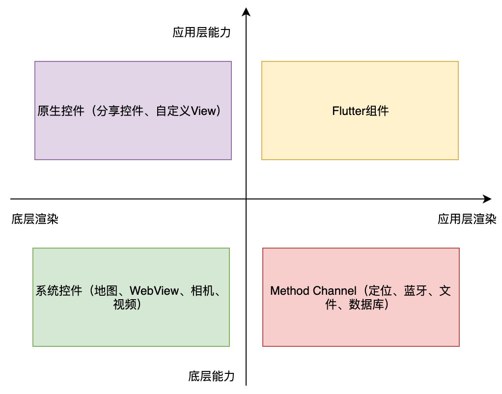
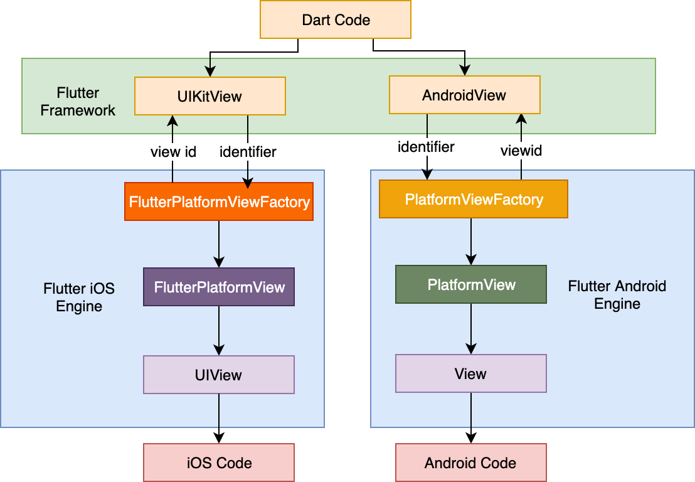
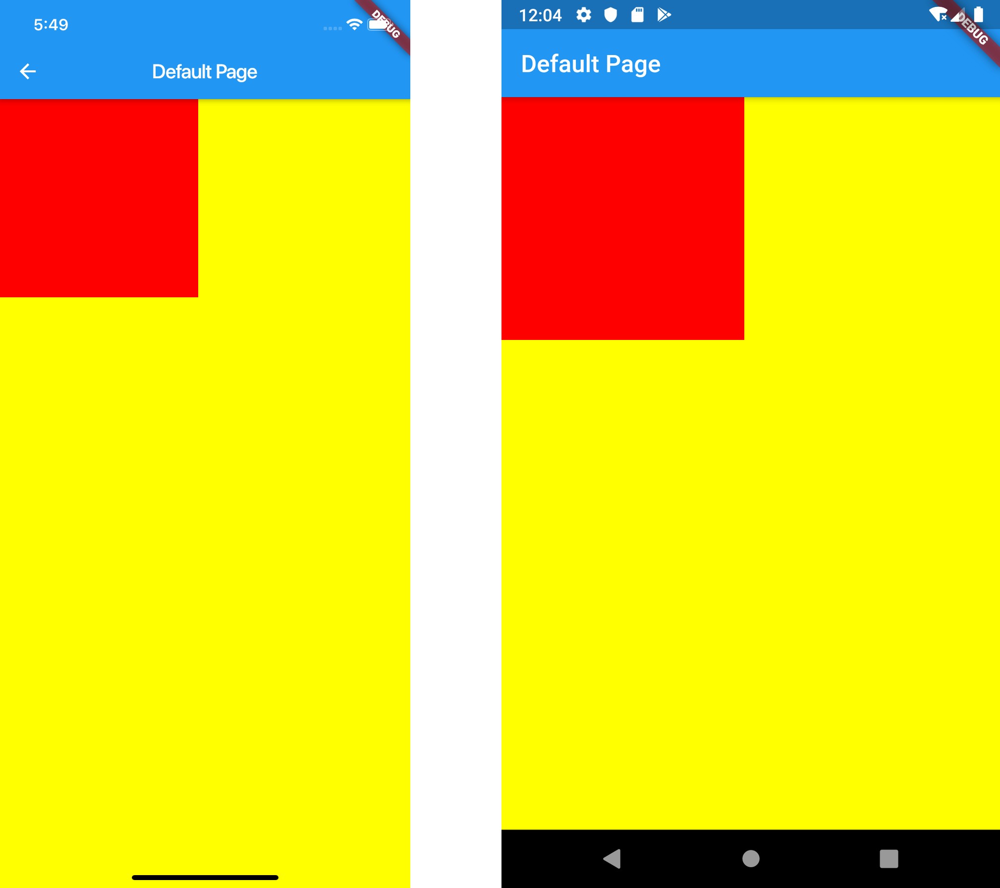
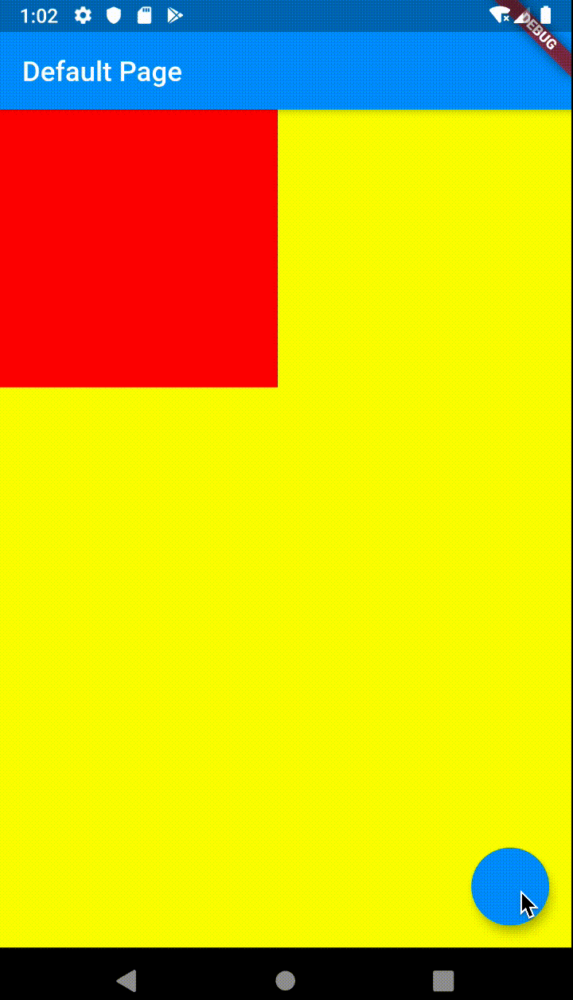

- 00 开篇词 为什么每一位大前端从业者都应该学习Flutter？.md
- 01 预习篇 · 从0开始搭建Flutter工程环境.md
- 02 预习篇 · Dart语言概览.md
- 03 深入理解跨平台方案的历史发展逻辑.md
- 04 Flutter区别于其他方案的关键技术是什么？.md
- 05 从标准模板入手，体会Flutter代码是如何运行在原生系统上的.md
- 06 基础语法与类型变量：Dart是如何表示信息的？.md
- 07 函数、类与运算符：Dart是如何处理信息的？.md
- 08 综合案例：掌握Dart核心特性.md
- 09 Widget，构建Flutter界面的基石.md
- 10 Widget中的State到底是什么？.md
- 11 提到生命周期，我们是在说什么？.md
- 12 经典控件（一）：文本、图片和按钮在Flutter中怎么用？.md
- 13 经典控件（二）：UITableView_ListView在Flutter中是什么？.md
- 14 经典布局：如何定义子控件在父容器中排版的位置？.md
- 15 组合与自绘，我该选用何种方式自定义Widget？.md
- 16 从夜间模式说起，如何定制不同风格的App主题？.md
- 17 依赖管理（一）：图片、配置和字体在Flutter中怎么用？.md
- 18 依赖管理（二）：第三方组件库在Flutter中要如何管理？.md
- 19 用户交互事件该如何响应？.md
- 20 关于跨组件传递数据，你只需要记住这三招.md
- 21 路由与导航，Flutter是这样实现页面切换的.md
- 22 如何构造炫酷的动画效果？.md
- 23 单线程模型怎么保证UI运行流畅？.md
- 24 HTTP网络编程与JSON解析.md
- 25 本地存储与数据库的使用和优化.md
- 26 如何在Dart层兼容Android_iOS平台特定实现？（一）.md
- 27 如何在Dart层兼容Android_iOS平台特定实现？（二）.md
- 28 如何在原生应用中混编Flutter工程？.md
- 29 混合开发，该用何种方案管理导航栈？.md
- 30 为什么需要做状态管理，怎么做？.md
- 31 如何实现原生推送能力？.md
- 32 适配国际化，除了多语言我们还需要注意什么_.md
- 33 如何适配不同分辨率的手机屏幕？.md
- 34 如何理解Flutter的编译模式？.md
- 35 Hot Reload是怎么做到的？.md
- 36 如何通过工具链优化开发调试效率？.md
- 37 如何检测并优化Flutter App的整体性能表现？.md
- 38 如何通过自动化测试提高交付质量？.md
- 39 线上出现问题，该如何做好异常捕获与信息采集？.md
- 40 衡量Flutter App线上质量，我们需要关注这三个指标.md
- 41 组件化和平台化，该如何组织合理稳定的Flutter工程结构？.md
- 42 如何构建高效的Flutter App打包发布环境？.md
- 43 如何构建自己的Flutter混合开发框架（一）？.md
- 44 如何构建自己的Flutter混合开发框架（二）？.md
- 特别放送 温故而知新，与你说说专栏的那些思考题.md
- 结束语 勿畏难，勿轻略.md
27 如何在Dart层兼容Android_iOS平台特定实现？（二）
你好，我是陈航。
在上一篇文章中，我与你介绍了方法通道，这种在Flutter中实现调用原生Android、iOS代码的轻量级解决方案。使用方法通道，我们可以把原生代码所拥有的能力，以接口形式提供给Dart。
这样，当发起方法调用时，Flutter应用会以类似网络异步调用的方式，将请求数据通过一个唯一标识符指定的方法通道传输至原生代码宿主；而原生代码处理完毕后，会将响应结果通过方法通道回传至Flutter，从而实现Dart代码与原生Android、iOS代码的交互。这，与调用一个本地的Dart 异步API并无太多区别。
通过方法通道，我们可以把原生操作系统提供的底层能力，以及现有原生开发中一些相对成熟的解决方案，以接口封装的形式在Dart层快速搞定，从而解决原生代码在Flutter上的复用问题。然后，我们可以利用Flutter本身提供的丰富控件，做好UI渲染。
底层能力+应用层渲染，看似我们已经搞定了搭建一个复杂App的所有内容。但，真的是这样吗？
构建一个复杂App都需要什么？
别急，在下结论之前，我们先按照四象限分析法，把能力和渲染分解成四个维度，分析构建一个复杂App都需要什么。

图1 四象限分析法
经过分析，我们终于发现，原来构建一个App需要覆盖那么多的知识点，通过Flutter和方法通道只能搞定应用层渲染、应用层能力和底层能力，对于那些涉及到底层渲染，比如浏览器、相机、地图，以及原生自定义视图的场景，自己在Flutter上重新开发一套显然不太现实。
在这种情况下，使用混合视图看起来是一个不错的选择。我们可以在Flutter的Widget树中提前预留一块空白区域，在Flutter的画板中（即FlutterView与FlutterViewController）嵌入一个与空白区域完全匹配的原生视图，就可以实现想要的视觉效果了。
但是，采用这种方案极其不优雅，因为嵌入的原生视图并不在Flutter的渲染层级中，需要同时在Flutter侧与原生侧做大量的适配工作，才能实现正常的用户交互体验。
幸运的是，Flutter提供了一个平台视图（Platform View）的概念。它提供了一种方法，允许开发者在Flutter里面嵌入原生系统（Android和iOS）的视图，并加入到Flutter的渲染树中，实现与Flutter一致的交互体验。
这样一来，通过平台视图，我们就可以将一个原生控件包装成Flutter控件，嵌入到Flutter页面中，就像使用一个普通的Widget一样。
接下来，我就与你详细讲述如何使用平台视图。
平台视图
如果说方法通道解决的是原生能力逻辑复用问题，那么平台视图解决的就是原生视图复用问题。Flutter提供了一种轻量级的方法，让我们可以创建原生（Android和iOS）的视图，通过一些简单的Dart层接口封装之后，就可以将它插入Widget树中，实现原生视图与Flutter视图的混用。
一次典型的平台视图使用过程与方法通道类似：
- 首先，由作为客户端的Flutter，通过向原生视图的Flutter封装类（在iOS和Android平台分别是UIKitView和AndroidView）传入视图标识符，用于发起原生视图的创建请求；
- 然后，原生代码侧将对应原生视图的创建交给平台视图工厂（PlatformViewFactory）实现；
- 最后，在原生代码侧将视图标识符与平台视图工厂进行关联注册，让Flutter发起的视图创建请求可以直接找到对应的视图创建工厂。
至此，我们就可以像使用Widget那样，使用原生视图了。整个流程，如下图所示：

图2 平台视图示例
接下来，我以一个具体的案例，也就是将一个红色的原生视图内嵌到Flutter中，与你演示如何使用平台视图。这部分内容主要包括两部分：
- 作为调用发起方的Flutter，如何实现原生视图的接口调用？
- 如何在原生（Android和iOS）系统实现接口？
接下来，我将分别与你讲述这两个问题。
Flutter如何实现原生视图的接口调用？
在下面的代码中，我们在SampleView的内部，分别使用了原生Android、iOS视图的封装类AndroidView和UIkitView，并传入了一个唯一标识符，用于和原生视图建立关联：
class SampleView extends StatelessWidget {
@override
Widget build(BuildContext context) {
//使用Android平台的AndroidView，传入唯一标识符sampleView
if (defaultTargetPlatform == TargetPlatform.android) {
return AndroidView(viewType: 'sampleView');
} else {
//使用iOS平台的UIKitView，传入唯一标识符sampleView
return UiKitView(viewType: 'sampleView');
}
}
}
可以看到，平台视图在Flutter侧的使用方式比较简单，与普通Widget并无明显区别。而关于普通Widget的使用方式，你可以参考第12、13篇的相关内容进行复习。
调用方的实现搞定了。接下来，我们需要在原生代码中完成视图创建的封装，建立相关的绑定关系。同样的，由于需要同时适配Android和iOS平台，我们需要分别在两个系统上完成对应的接口实现。
如何在原生系统实现接口？
首先，我们来看看Android端的实现。在下面的代码中，我们分别创建了平台视图工厂和原生视图封装类，并通过视图工厂的create方法，将它们关联起来：
//视图工厂类
class SampleViewFactory extends PlatformViewFactory {
private final BinaryMessenger messenger;
//初始化方法
public SampleViewFactory(BinaryMessenger msger) {
super(StandardMessageCodec.INSTANCE);
messenger = msger;
}
//创建原生视图封装类，完成关联
@Override
public PlatformView create(Context context, int id, Object obj) {
return new SimpleViewControl(context, id, messenger);
}
}
//原生视图封装类
class SimpleViewControl implements PlatformView {
private final View view;//缓存原生视图
//初始化方法，提前创建好视图
public SimpleViewControl(Context context, int id, BinaryMessenger messenger) {
view = new View(context);
view.setBackgroundColor(Color.rgb(255, 0, 0));
}
//返回原生视图
@Override
public View getView() {
return view;
}
//原生视图销毁回调
@Override
public void dispose() {
}
}
将原生视图封装类与原生视图工厂完成关联后，接下来就需要将Flutter侧的调用与视图工厂绑定起来了。与上一篇文章讲述的方法通道类似，我们仍然需要在MainActivity中进行绑定操作：
protected void onCreate(Bundle savedInstanceState) {
...
Registrar registrar = registrarFor("samples.chenhang/native_views");//生成注册类
SampleViewFactory playerViewFactory = new SampleViewFactory(registrar.messenger());//生成视图工厂
registrar.platformViewRegistry().registerViewFactory("sampleView", playerViewFactory);//注册视图工厂
}
完成绑定之后，平台视图调用响应的Android部分就搞定了。
接下来，我们再来看看iOS端的实现。
与Android类似，我们同样需要分别创建平台视图工厂和原生视图封装类，并通过视图工厂的create方法，将它们关联起来：
//平台视图工厂
@interface SampleViewFactory : NSObject<FlutterPlatformViewFactory>
- (instancetype)initWithMessenger:(NSObject<FlutterBinaryMessenger>*)messager;
@end
@implementation SampleViewFactory{
NSObject<FlutterBinaryMessenger>*_messenger;
}
- (instancetype)initWithMessenger:(NSObject<FlutterBinaryMessenger> *)messager{
self = [super init];
if (self) {
_messenger = messager;
}
return self;
}
-(NSObject<FlutterMessageCodec> *)createArgsCodec{
return [FlutterStandardMessageCodec sharedInstance];
}
//创建原生视图封装实例
-(NSObject<FlutterPlatformView> *)createWithFrame:(CGRect)frame viewIdentifier:(int64_t)viewId arguments:(id)args{
SampleViewControl *activity = [[SampleViewControl alloc] initWithWithFrame:frame viewIdentifier:viewId arguments:args binaryMessenger:_messenger];
return activity;
}
@end
//平台视图封装类
@interface SampleViewControl : NSObject<FlutterPlatformView>
- (instancetype)initWithWithFrame:(CGRect)frame viewIdentifier:(int64_t)viewId arguments:(id _Nullable)args binaryMessenger:(NSObject<FlutterBinaryMessenger>*)messenger;
@end
@implementation SampleViewControl{
UIView * _templcateView;
}
//创建原生视图
- (instancetype)initWithWithFrame:(CGRect)frame viewIdentifier:(int64_t)viewId arguments:(id)args binaryMessenger:(NSObject<FlutterBinaryMessenger> *)messenger{
if ([super init]) {
_templcateView = [[UIView alloc] init];
_templcateView.backgroundColor = [UIColor redColor];
}
return self;
}
-(UIView *)view{
return _templcateView;
}
@end
然后，我们同样需要把原生视图的创建与Flutter侧的调用关联起来，才可以在Flutter侧找到原生视图的实现：
- (BOOL)application:(UIApplication *)application didFinishLaunchingWithOptions:(NSDictionary *)launchOptions {
NSObject<FlutterPluginRegistrar>* registrar = [self registrarForPlugin:@"samples.chenhang/native_views"];//生成注册类
SampleViewFactory* viewFactory = [[SampleViewFactory alloc] initWithMessenger:registrar.messenger];//生成视图工厂
[registrar registerViewFactory:viewFactory withId:@"sampleView"];//注册视图工厂
...
}
需要注意的是，在iOS平台上，Flutter内嵌UIKitView目前还处于技术预览状态，因此我们还需要在Info.plist文件中增加一项配置，把内嵌原生视图的功能开关设置为true，才能打开这个隐藏功能：
<dict>
...
<key>io.flutter.embedded_views_preview</key>
<true/>
....
</dict>
经过上面的封装与绑定，Android端与iOS端的平台视图功能都已经实现了。接下来，我们就可以在Flutter应用里，像使用普通Widget一样，去内嵌原生视图了：
Scaffold(
backgroundColor: Colors.yellowAccent,
body: Container(width: 200, height:200,
child: SampleView(controller: controller)
));
如下所示，我们分别在iOS和Android平台的Flutter应用上，内嵌了一个红色的原生视图：

图3 内嵌原生视图示例
在上面的例子中，我们将原生视图封装在一个StatelessWidget中，可以有效应对静态展示的场景。如果我们需要在程序运行时动态调整原生视图的样式，又该如何处理呢？
如何在程序运行时，动态地调整原生视图的样式？
与基于声明式的Flutter Widget，每次变化只能以数据驱动其视图销毁重建不同，原生视图是基于命令式的，可以精确地控制视图展示样式。因此，我们可以在原生视图的封装类中，将其持有的修改视图实例相关的接口，以方法通道的方式暴露给Flutter，让Flutter也可以拥有动态调整视图视觉样式的能力。
接下来，我以一个具体的案例来演示如何在程序运行时动态调整内嵌原生视图的背景颜色。
在这个案例中，我们会用到原生视图的一个初始化属性，即onPlatformViewCreated：原生视图会在其创建完成后，以回调的形式通知视图id，因此我们可以在这个时候注册方法通道，让后续的视图修改请求通过这条通道传递给原生视图。
由于我们在底层直接持有了原生视图的实例，因此理论上可以直接在这个原生视图的Flutter封装类上提供视图修改方法，而不管它到底是StatelessWidget还是StatefulWidget。但为了遵照Flutter的Widget设计理念，我们还是决定将视图展示与视图控制分离，即：将原生视图封装为一个StatefulWidget专门用于展示，通过其controller初始化参数，在运行期修改原生视图的展示效果。如下所示：
//原生视图控制器
class NativeViewController {
MethodChannel _channel;
//原生视图完成创建后，通过id生成唯一方法通道
onCreate(int id) {
_channel = MethodChannel('samples.chenhang/native_views_$id');
}
//调用原生视图方法，改变背景颜色
Future<void> changeBackgroundColor() async {
return _channel.invokeMethod('changeBackgroundColor');
}
}
//原生视图Flutter侧封装，继承自StatefulWidget
class SampleView extends StatefulWidget {
const SampleView({
Key key,
this.controller,
}) : super(key: key);
//持有视图控制器
final NativeViewController controller;
@override
State<StatefulWidget> createState() => _SampleViewState();
}
class _SampleViewState extends State<SampleView> {
//根据平台确定返回何种平台视图
@override
Widget build(BuildContext context) {
if (defaultTargetPlatform == TargetPlatform.android) {
return AndroidView(
viewType: 'sampleView',
//原生视图创建完成后，通过onPlatformViewCreated产生回调
onPlatformViewCreated: _onPlatformViewCreated,
);
} else {
return UiKitView(viewType: 'sampleView',
//原生视图创建完成后，通过onPlatformViewCreated产生回调
onPlatformViewCreated: _onPlatformViewCreated
);
}
}
//原生视图创建完成后，调用control的onCreate方法，传入view id
_onPlatformViewCreated(int id) {
if (widget.controller == null) {
return;
}
widget.controller.onCreate(id);
}
}
Flutter的调用方实现搞定了，接下来我们分别看看Android和iOS端的实现。
程序的整体结构与之前并无不同，只是在进行原生视图初始化时，我们需要完成方法通道的注册和相关事件的处理；在响应方法调用消息时，我们需要判断方法名，如果完全匹配，则修改视图背景，否则返回异常。
Android端接口实现代码如下所示：
class SimpleViewControl implements PlatformView, MethodCallHandler {
private final MethodChannel methodChannel;
...
public SimpleViewControl(Context context, int id, BinaryMessenger messenger) {
...
//用view id注册方法通道
methodChannel = new MethodChannel(messenger, "samples.chenhang/native_views_" + id);
//设置方法通道回调
methodChannel.setMethodCallHandler(this);
}
//处理方法调用消息
@Override
public void onMethodCall(MethodCall methodCall, MethodChannel.Result result) {
//如果方法名完全匹配
if (methodCall.method.equals("changeBackgroundColor")) {
//修改视图背景，返回成功
view.setBackgroundColor(Color.rgb(0, 0, 255));
result.success(0);
}else {
//调用方发起了一个不支持的API调用
result.notImplemented();
}
}
...
}
iOS端接口实现代码：
@implementation SampleViewControl{
...
FlutterMethodChannel* _channel;
}
- (instancetype)initWithWithFrame:(CGRect)frame viewIdentifier:(int64_t)viewId arguments:(id)args binaryMessenger:(NSObject<FlutterBinaryMessenger> *)messenger{
if ([super init]) {
...
//使用view id完成方法通道的创建
_channel = [FlutterMethodChannel methodChannelWithName:[NSString stringWithFormat:@"samples.chenhang/native_views_%lld", viewId] binaryMessenger:messenger];
//设置方法通道的处理回调
__weak __typeof__(self) weakSelf = self;
[_channel setMethodCallHandler:^(FlutterMethodCall* call, FlutterResult result) {
[weakSelf onMethodCall:call result:result];
}];
}
return self;
}
//响应方法调用消息
- (void)onMethodCall:(FlutterMethodCall*)call result:(FlutterResult)result {
//如果方法名完全匹配
if ([[call method] isEqualToString:@"changeBackgroundColor"]) {
//修改视图背景色，返回成功
_templcateView.backgroundColor = [UIColor blueColor];
result(@0);
} else {
//调用方发起了一个不支持的API调用
result(FlutterMethodNotImplemented);
}
}
...
@end
通过注册方法通道，以及暴露的changeBackgroundColor接口，Android端与iOS端修改平台视图背景颜色的功能都已经实现了。接下来，我们就可以在Flutter应用运行期间，修改原生视图展示样式了：
class DefaultState extends State<DefaultPage> {
NativeViewController controller;
@override
void initState() {
controller = NativeViewController();//初始化原生View控制器
super.initState();
}
@override
Widget build(BuildContext context) {
return Scaffold(
...
//内嵌原生View
body: Container(width: 200, height:200,
child: SampleView(controller: controller)
),
//设置点击行为：改变视图颜色
floatingActionButton: FloatingActionButton(onPressed: ()=>controller.changeBackgroundColor())
);
}
}
运行一下，效果如下所示：

图4 动态修改原生视图样式
总结
好了，今天的分享就到这里。我们总结一下今天的主要内容吧。
平台视图解决了原生渲染能力的复用问题，使得Flutter能够通过轻量级的代码封装，把原生视图组装成一个Flutter控件。
Flutter提供了平台视图工厂和视图标识符两个概念，因此Dart层发起的视图创建请求可以通过标识符直接找到对应的视图创建工厂，从而实现原生视图与Flutter视图的融合复用。对于需要在运行期动态调用原生视图接口的需求，我们可以在原生视图的封装类中注册方法通道，实现精确控制原生视图展示的效果。
需要注意的是，由于Flutter与原生渲染方式完全不同，因此转换不同的渲染数据会有较大的性能开销。如果在一个界面上同时实例化多个原生控件，就会对性能造成非常大的影响，所以我们要避免在使用Flutter控件也能实现的情况下去使用内嵌平台视图。
因为这样做，一方面需要分别在Android和iOS端写大量的适配桥接代码，违背了跨平台技术的本意，也增加了后续的维护成本；另一方面毕竟除去地图、WebView、相机等涉及底层方案的特殊情况外，大部分原生代码能够实现的UI效果，完全可以用Flutter实现。
我把今天分享所涉及到的知识点打包到了GitHub中，你可以下载下来，反复运行几次，加深理解。
思考题
最后，我给你留下一道思考题吧。
请你在动态调整原生视图样式的代码基础上，增加颜色参数，以实现动态变更原生视图颜色的需求。
欢迎你在评论区给我留言分享你的观点，我会在下一篇文章中等待你！感谢你的收听，也欢迎你把这篇文章分享给更多的朋友一起阅读。
© 2019 - 2023 Liangliang Lee. Powered by gin and hexo-theme-book.